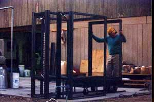
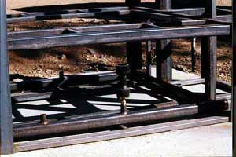
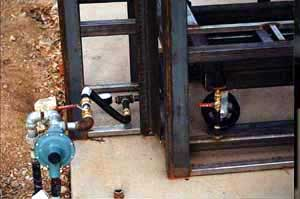
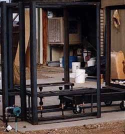
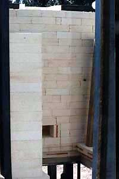
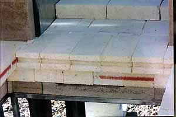
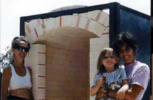

| Building My Dream Kiln II
Michelle Lowe of Desert Dragon Pottery describes building her 'Dream
Kiln' (Part 2)
Then I would put the frame pieces
together and tell him where to weld. Another friend of mine
volunteered to be a third hand the two days we spent welding,
and her help was invaluable. I started the frame by building
three cross-layers, the bottom, the layer that holds the brick
and the top, and then we attached uprights to put it together.
|
“Cyndi
volunteered to be a third hand the two days we spent welding,
and her help was invaluable.” |
|  The cart was then built, upside-down, and set up on
unattached tracks to attach the door frame and test it out.
|
The next thing I focused on was the burner system.
This welding job was pretty special, it needed to be sealed
totally for the gas line. I called my gas company (propane)
and they directed me to someone who could fabricate what I wanted
to build.
|
 |
| I took the parts out, laid it out for the guy
and two days later he had built it and air tested
it for me. I bought the actual burners themselves by mail from
a source in Los Angeles. Then, the propane guy came out, scoped
out the job and came back and connected the venturis to the
system. |
 |
At this point I also ordered sheets of galvanized
steel for the outer surface of the kiln. It serves both functionally-holding
the thermal insulation and bricks in and visually, being much
more attractive to look at than the outer layer of the kilnwall,
which is rigid thermal insulation. When that was ready, I hired
a welder from the want ads, to come and fix a few minor adjustments
and put the galvanized steel into the frame. Unfortunately,
the film was defective from this point 'til after the kiln walls
and chimney are bricked.
|
 |
|  |
Bricking
The first thing I did, to start filling in this blank frame
I had constructed, was to line the sides and bottom layers with
thermal insulation. This kiln design has six burners coming
up from the bottom along both sides. I had to cut the port holes
for the burners in the insulation. It was then I realized that
I had miscalculated and made the burner assembly 5.5" too wide,
necessitating a crosspipe being shortened. Lining the kiln was
easy, as the insulation material is much like layered cardboard
and very easy to cut to fit. The only drawback about working
with the insulation is the itchy dust. When the insulation layer
was all in, we started on the walls. The side walls went fairly
quickly and smoothly but the back wall, with the flue, chimney
and damper to think about went a bit more roughly. I was unhappy
with the back wall after the first try. After discussing my
design with an online friend, in particular the meeting of the
cart and the kiln at the back wall, I decided to take the back
wall down and rebuild it, changing the cart/kiln seal and fixing
the crookedness that bothered me. The second incarnation of
the back wall was much better. My flue design is Nils Lou's
venturi design from The Art of Firing, with a horizontal
damper up above the flue.
|
|  |
| Next I had to build my arch. This was a challenge.
I wrangled Gary to help me build an arch form out of plywood,
cutting arcs of wood and running strips lengthwise. I used Fred
Olsen's book to determine how many bricks I should need. I decided
to cut the sideskews for the arch, as I had forgotten to order
them with my other brick. |
 |
| “Rusty
Wiltjer's suggestion to load the cart with hardbrick on top
to hold the softbrick in place...was brilliant!” |
I was confused, at first, as to how
to determine the skew brick shape, but after some discussion
of the process with friends I bought a mitering square and laid
the archbrick out marking the skew angle on paper, which I used
as a guide to set the mitering square used to mark each skew
brick.
|
> continue
> previous
More Articles
|